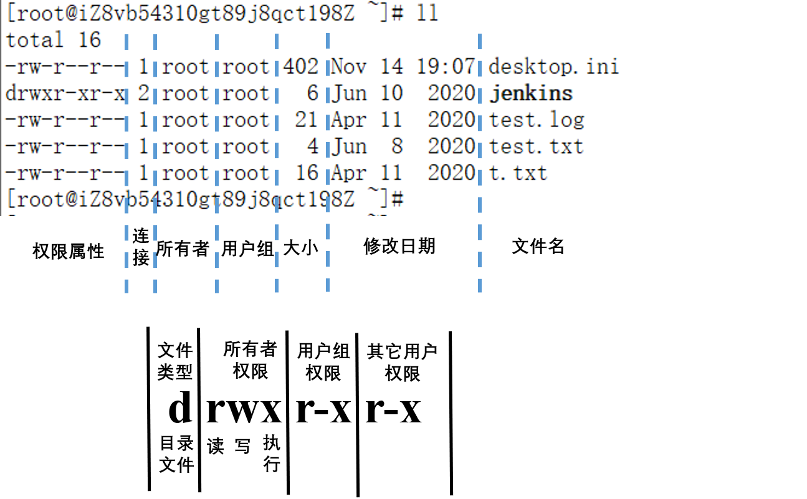

Linux系统命令主要包括文件操作、网络命令和性能命令，本文介绍常用文件操作命令。
文件属性

文件类型：
- 普通文件：-
- 目录文件：d
- 块设备文件：b，硬盘
- 字符设备： c，串行端口的接口设备，例如键盘、鼠标
- 链接文件：l
- 套接字文件：s
- 管道文件：p
r 读权限read 4
w 写权限 write 2
x 操作权限 execute 1
常用命令：
- chmod 777 test，修改test文件属性为可读，可写，可执行（4+2+1=7）
- ls -l 查看文件属性（或者使用
ll） - ls -ld 查看当前目录的属性
- ls -l 长模式，属性信息
- ls -1 把文件一行一个的显示出来
- ls -a 显示所有文件
- ls -s 显示文件及文件大小
- ls -l -a -s —> ls -las
- ls -sh (h-human，显示文件大小单位）
基本终端操作命令
ls: 列出目录文件
pwd: 显示目前的目录
cd: 切换目录
- cd - ：切换到上次目录
- cd .. ：切换到上级目录
- cd / ：切换到根目录
- cd ~ ：切换到当前用户的home目录
- cd start*end ：目录名较长时可使用通配符”*“，比如进入system目录，可以使用 cd s*m
man命令：可以通过 man + 命令 查看帮助文档：
- j：下翻
- k：上翻
- 空格键：翻页
- q：退出
- /-e：查找“-e”
- n 下一个“-e”
- N（shift+n） 上一个“-e”
1 | [root@client ~]# ls |
文件、目录操作
touch：新建文件，或者使用vim命令创建文件：vim test.txt，保存
mkdir: 创建一个新的目录
rmdir: 删除一个空的目录
cp: 复制文件或目录
rm: 移除文件或目录
mv: 移动文件与目录，或修改文件与目录的名称
1 | # 将目录A复制到目录B下 |
文件内容显示
cat：显示文件内容，还可以将多个文件连接起来显示，适用于内容少的文件
more：以一页一页的显示内容，空格键下一页
less：支持向前翻，向后翻页
head：打印前面n行内容：head -2 test.txt
tail：打印后面n行内容：tail -2 test.txt
向文件添加内容
将内容”TEST”添加到test.txt文件中
方法一：vi编辑法
- 打开终端，输入vi test.txt 回车，按a或i进入编辑模式
输入 TEST，然后按esc键退出编辑模式，输入:wq保存并退出。
方法二：echo命令法 1
2
3
4# 追加
echo ‘TEST’ >> ./test.txt
# 覆盖
echo ‘TEST’ > ./test.txt
方法三：cat命令法 1
cat >> ./test.txt <<TEST
结尾的TEST要顶格。
方法四：cat编辑法 1
2
3
4
5# 追加
cat >> ./test.txt
# 覆盖
cat > ./test.txt
- 回车后开始编辑输入内容：TEST，然后回车
- 按
ctrl+d或者ctrl+c组合键结束编辑。
清空文件内容
下面介绍几种清空文件内容的方式1
2
3
4> test.txt
: > test.txt
cat /dev/null > test.txt
echo -n "" > test.txt
也可以使用 dd 和 truncate命令来清空内容：1
2
3dd of=test.txt count=0
dd if=/dev/null of=test.txt
truncate -s 0 test.txt
这两个命令可以用来生成指定大小的文件，具体使用方法可参考文章Linux和Windows创建指定大小文件方法。
还可以使用 sed 命令：1
sed -i d test.txt
1 | sed -i '/^$/d' test.txt # 删除空行 |
find命令
用于查找文件，基本用法：find path -name‘xxx'find / -name jenkins：查找所有目录下的jenkins文件1
2
3
4
5
6[root@client ~]# find / -name jenkins
/root/jenkins
/var/lib/docker/overlay2/6cc1d9dcc70fed5dcc455ca4147a13f650724c2e8004a9c101b4e2130276241c/diff/usr/share/jenkins
/var/lib/docker/overlay2/9b98446d8cf91c4c8da9d8eab5cd6366ef2cec266615c1fe6ad4f4faa84f25a1/diff/usr/share/jenkins
/var/lib/docker/overlay2/f1f4123687b215d1eff46d989df6c9568be89c231a83ab6105dc22c136ccf24b/diff/usr/share/jenkins
[root@iZ8vb54310gt89j8qct198Z ~]#
限制搜索深度
- -maxdepth
- -mindefth
限制文件类型：文件类型有：普通文件f，目录d，符号链接 l，字符设备c，块设备b，套接字s，FIFO-p
- -type f：搜索普通文件和目录
还有其他限制条件，可以通过命令man find查看
统计文件行数
统计某个文件的行数 (包括空行)：wc -l 文件名1
2
3
4
5
6
7$ wc -l file1.log
6 file1.log
$ wc -l file1.txt file2.txt
6 file1.txt
8 file2.txt
14 总用量
统计某个文件的行数 (不包括空行)
1 | $ cat file2.txt | sed '/^\s*$/d' | wc -l |
统计当前目录下每个文件（不包括目录中的文件）的行数 (包括空行)：
1 | $ wc -l ./* |
统计当前目录下每个文件（不包括目录中的文件）的行数 (不包括空行)：
1 | $ grep -cv '^\s*$' * |
统计当前目录下每个文件（包括目录中的文件）的行数：find . -type f | xargs wc -l
1 | $ find . -type f | xargs wc -l |
或者：1
2
3
4
5
6
7$ find . -type f -exec wc -l {} \;
6 ./dir1/file3.txt
8 ./dir1/file4.txt
6 ./file1.txt
8 ./file2.txt
6 ./file1.log
统计指定后缀的文件行数：
1 | find . -type f -name "*.log"| xargs wc -l |
统计目录下所有普通文件（不包括目录中的文件）的总行数:
1 | $ cat ./* | wc -l |
统计目录下所有普通文件（包括目录中的文件）的总行数:
1 | # 目录下所有文件总行数，包括空行 |
文件解压
tar文件
tar文件解压：
1 | tar -xvzf xxx.tar.gz -C /opt |
-x, --extract：解压文件-v, --verbose：显示解压日志-z, --gzip：通过gzip支持压缩或解压缩-f, --file：指定解压文件-t, --list：列出压缩包内容-C, --directory=DIR：压缩到指定目录
不解压文件，查看包内的文件信息
1 | tar -ztvf xxx.tar.gz |
压缩为tar.gz文件
1 | tar -czf xxx.tar.gz file-name或者DIR |
-c, --create：创建压缩文件
zip文件
解压zip文件：
1 | $ unzip -d /temp test.zip # 解压到目的目录 |
查看压缩包文件，不解压
1 | $ zip tvf test.zip |
压缩为zip文件:
1 | $ zip -r test.zip test/ |
du 命令：显示目录或文件的大小
du（disk usage）命令主要用于显示目录或文件的大小：1
2
3
4$ du
du
18760 ./node_exporter-1.1.2.linux-amd64
27792 .
下面介绍几个选项参数：
-a, --all：显示目录下所有文件大小-b, --bytes：以byte为单位-h, --human-readable：文件大小以K，M，G为单位显示-H, --si：文件大小以KB，MB，GB为单位（幂底数为1000）-k, --kilobytes：以1024 bytes为单位-m, --megabytes：以MB为单位-s, --summarize：显示文件总大小-d, --max-depth=N：最大深度
实例：
1 | $du -hs |
参考文档：
https://stackoverflow.com/questions/114814/count-non-blank-lines-of-code-in-bash
https://www.thegeekdiary.com/how-to-count-lines-in-a-file-in-unix-linux/
本文标题:Linux常用命令：文件操作命令
文章作者:hiyo
文章链接:https://hiyongz.github.io/posts/linux-shell-file-command-guide/
许可协议:本博客文章除特别声明外，均采用CC BY-NC-ND 4.0 许可协议。转载请保留原文链接及作者。